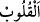
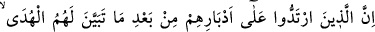
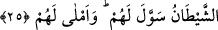

__WORD__ (kulûb: kalpler) kelimesinin nekre oluşu, ya kalplerin fesad ve cehaletteki vahim
ve korkunç durumlarını ortaya koymak içindir. Sanki “hali bilinmeyen, durumu takdir
edilemeyen bu kalplerin kilitleri mi var?” denilmektedir. Yahut bundan murad bir takım
kimselerin kalpleri olup bunlar da münafıklardır. Akfal kelimesinin kulûb kelimesine
râci olan zamire muzâf olması, bu kilitlerin bilinen demir kilitlerden farklı olup kalplere
mahsus ve kalplerin durumuna münasip özel kilitler olduğuna delâlet içindir. Çünkü bu
kilitler, küfür kilitleridir. Bunlar, kalpleri bir daha (îmana) açılmayacak şekilde
kilitlemiştir.
et-Te’vilât-ı Necmiyye’ de şöyle denilmektedir: Kur’ân’ı düşünmezler mi ki
Kur’an’da onları irfanın güzelliğine götürmek, hicran zindanından kurtarmak için her
hastalığa şifâ vardır. Yoksa onların kalpleri üzerinde kilitleri mi vardır. Yoksa hevâ
ehlinin kalpleri üzerinde hakkın kilidi mi vardır ki o kalplere uyarı mesajları girmiyor.
İlim ışıkları o kalpler üzerinde yayılmıyor ve onlar hitabı anlamıyorlar. Tabiî ki kapı
kapalı olunca orada bulunan şüphe ve inkâr dışarı çıkamaz. Onların dâvet edildiği sıdk
ve yakin (doğruluk ve kesin inanç) oraya giremez.
Nakledildiğine göre, Bişr Hafî (k.s.) kız kardeşinin evine geldi ve: “Ey kardeşim,
evin damına çıkacağım” dedi. Yukarı tırmandı, birkaç adımdan sonra dama çıktı ve
sabaha kadar orada durdu. Sabah olunca aşağı indi ve cemaatle namaza gitti. Sabah
namazdan sonra geri döndüğünde kardeşi: “Sabaha kadar damda durmanın sebebi
nedir?” diye sordu. O şöyle cevap verdi: “Aklıma geldi ki Bağdad’da ismi Bişr olan
birçok kimse var. Bunların biri Yahûdî, biri Hıristiyan, biriyse Mecûsî’dir. Ben büyük
bir devlete sâhip olarak Müslüman olmuşum. Şunun için hayretler içinde kaldım ki
onlar böyle bir devletten mahrûm kalmak için ne yaptılar, böyle bir devlete sahip olmak
için ben ne yaptım?”
Yâni kalplerin üzerindeki kilitlerin açılması bütün gaybları bilen Allah’ın fazl ü
keremidir. Tabiî ki yakınlık ve kabul makamı, müşâhede ve vuslat rütbesi herkese nasip
ve müyesser olmaz. Kur’ân’ı düşünmemek ancak talihsizlik ve bedbaht olmanın
sonuçları, nefsin ve nefsânîliğin gereğidir. Yoksa her talep ve arzu, insanı bir hâcetin
husûlüne götürür.
Sâib şöyle demiştir:
Ümid tohumunu saçmayı elden bırakma,
Çünkü bahar bulutunun bereketinde cimrilik olmaz.